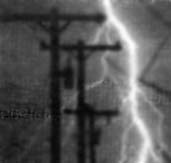

MOTHER NO. 20 contained some feedback on my statements in NO. 19 about the advantages of direct over alternating current, and I'd like to offer a rebuttal that's based on my own experience . . . not on theory, as the criticisms seem to be.
First of all, an alleged danger of D.C. is that one might not be able to let go of the electrodes that are producing the shock. Now, I've been hearing that statement all my life, and I'm convinced that it's nothing but theory, with no real foundation. I've had all sorts of shocks-up to and including one of 10,000 volts, when one contact was with my left had and the other with both feet thoroughly grounded-and I've never felt any inclination to hold on. On the contrary, either kind of current causes an irresistible urge to disengage, which some people feel so strongly that they claim the jolt has "knocked me down". I've seen victims do some wild jumping, but I've never seen one want to continue grasping the conductor.
In fact, I wonder whether shocks are necessarily as deadly as is generally believed. That time I was hit with 10,000 volts (A.C.) I didn't dare pick up a cup of coffee for three days afterward because I was sure I'd slosh it all over the room. I was convinced that my nervous system had had it . . . yet a week later I was as good as new. If some people's notions are true, my heart must have moved out of the way.
Yes, I admit that even a small current could kill you if it passed through the heart . . . but to accomplish that you'd probably have to introduce electrodes into the organ. Actually, of course, a current (unless it's of very high frequency) doesn't flow through one geometric line, but through a considerable area. In a case like my accident, one's heart might or might not get a lethal amount.
By the way, Peter Grant's statement that the body's resistance is only 500 ohms is clearly out of line . . . it's known that across any substantial part of the anatomy-as from hand to hand-the figure is well up in the thousands of ohms. Since I had no exact data of my own on this point, I made a test by thoroughly wetting my hands and grasping the prods of an ohmmeter. I got a reading of 50,000 ! I then attached the prods to sizable pieces of metal (something no one would do where there was shock hazard). When I again wet my hands and gripped these conductors, I couldn't get the indicator below 20,000 ohms.
Now don't misunderstand me! Current can be dangerous, especially if you don't know what you're doing, and there are some chances no one should take. (For example, don't risk shocks of any kind when you're working in a high place . . . on a windmill, perhaps. If you feel the current it's likely that you'll instinctively jump away from it, and you may lose your hold and fall.) Nevertheless, there's a theory-one I subscribe to-that most so-called shock deaths are really caused by fright. Certainly a severe jolt can be an alarming experience.
But whether or not electricity is as harmful to the body as most people think, I continue to believe that the danger is less from D.C. than from A.C. . . . and with reason. By the time I was ten years old we kids had our workshop (an abandoned corncrib) stocked with enough No. 6 dry cells to give us 110 volts D.C., which we played with all the time. If we'd fooled around with that much A.C. I doubt that I'd be writing now.
I've also done some experiments since then that bear out my belief. For instance, at one time a neighboring town had a community generating plant that put out 110 volts D.C. When I was in that facility with some other workers installing electrical equipment, I got to wondering what that amount of direct current would feel like. Then an opportunity presented itself and I grasped the blades of the main switch. I'm sure that my hands couldn't have been very drysince we were working in a rather warm room-and I didn't put anything on them to increase resistance . . . yet I could feel only the ripple of the current, which wasn't at all uncomfortable. I held on until my skin began to get hot, at which point no effort was required to release the control . . . I simply let go.
Here's another case: In the early days of radio a good many receivers-including all amateur models-were D.C., and tubes required a plate voltage of 90 volts of direct current. Since "B" batteries weren't being made (or at least weren't available locally), some of us solved the problem by building battery holders that would contain 60 flashlight "D" cells connected together in series. Because this was little more than a "breadboard" arrangement, I've felt 90 volts D.C. many times. There's certainly no tendency to hang on and the sensation isn't very disagreeable. But don't try touching 90 volts A.C. or you'll learn something fast.
I have 400 volts D.C. available right here beside me, and use it frequently. I have often come into contact with that source, but I don't take any special precautions because I know it isn't very dangerous . . . much less so than 110 volts A.C. I'll stick to my guns and continue to recommend direct current if you can possibly get it. It's safer and more satisfactory.
You see, I feel safe with my conclusions because they're based on experience. Theory can work well when it's correct and complete . . . but when it's founded largely on hearsay and not backed by practice, it can be dangerous.
|
 |
|
|